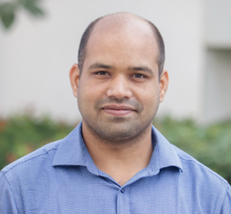
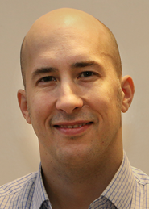
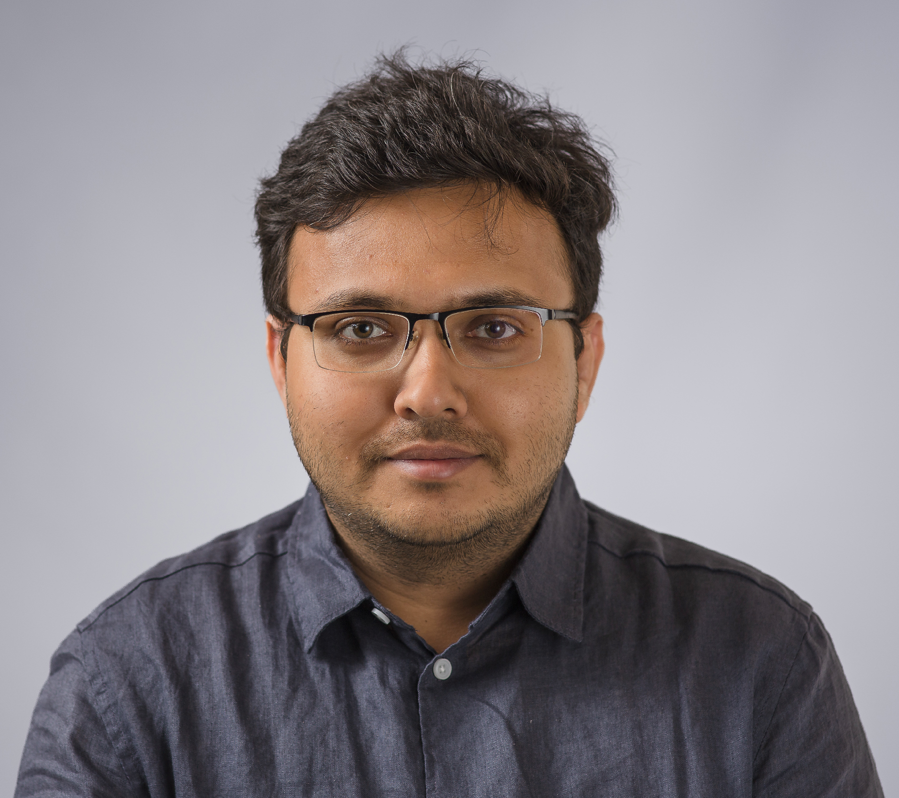
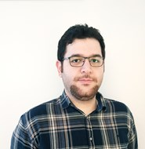
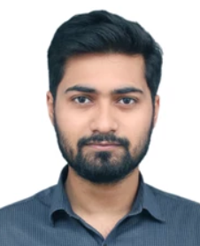
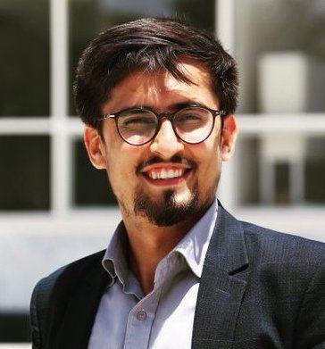

Autonomous Distributed Systems Lab
[Cyber Analytics and Learning Wing]
Great to have current members and collaborators!Current Members
Senior Researchers
|

Post-doc |
Post-doc |
||
PhD Students |
|||
|

Ph.D. Candidate |

Ph.D. Candidate |

Ph.D. Candidate |
Ph.D. Candidate |
|

Ph.D. Candidate |

Ph.D. Candidate |
Ph.D. Candidate |
Ph.D. Candidate |
Ongoing MS thesis
- Mimmi Edholm, MS in Computing Science and Engineering
- Albert Gustavsson, MS in Computing Science and Engineering
- Oskar Linden, MS in Computing Science and Engineering
Interns
- Ryosuke Araki, Master in Cybersecurity student at Nara Institute of Science and Technology (NAIST), Nara, Japan. [Period: November 2022 - ongoing].
PhD Grading Committee/Thesis Evaluator
PhD Grading Committee Member
- Sana Imtiaz, Erasmus Mundus Joint Doctoral candidate in Distributed Computing at KTH Royal Institute of Technology, Sweden, and Université catholique de Louvain, Belgium, 2021.
PhD Thesis Evaluator
- University of Malakand, Pakistan, 2021
Alumni (Postdocs, PhD Students, Visitors, and Interns)
Those who worked with my Team but not forgotten.Past Postdocs
- Xuan-Son Vu (2020 - 2022), now Senior Research Engineer, Umeå University, Sweden
Past PhD Students
- Enkhtur Tsogbaatar (Co-advisor, NAIST, Japan), Deep learning-based cyberattacks behaviour analysis for IoT ecosystem, 2022.
Past Interns
- Himika Das, Master in Applied Mathematics student at Indian Institute of Science Education and Research (IISER), Tirupati, India. [Period: May-August, 2022].
- Adil Bin Bhutto, B.Tech. in Computer Science and Enginnering final year student at Tezpur University (a Central University), India. [Period: February 2021 - April 2022].
Past Postgraduate Students
- Johannes Lindkvist, MS in Computing Science and Engineering, Autumn 2021 (VSI-DDoS Detection and Resolution in Serverless Computing), Department of Computing Science, Umeå University, Sweden.
- Kian Nassiry, MS in Computing Science and Engineering, Spring 2021 (Evaluation Of Cloud Native Message Queues), Department of Computing Science, Umeå University, Sweden.
- Robin Wallace, MS in Computing Science and Engineering, Spring 2021 (Evaluation of Function-as-a-Service Frameworks for Kubernetes), Department of Computing Science, Umeå University, Sweden.
- Jacob Ardnor, MS in Computing Science and Engineering, Spring 2021 (Performance impact analysis for distributed tracing infrastructures at scale), Department of Computing Science, Umeå University, Sweden.
- Nils Hedin, MS in Computing Science and Engineering, June 2020 (Securing Distributed File Systems for Kubernetes), Department of Computing Science, Umeå University, Sweden.
- Sebastian Olsson, MS in Computing Science and Engineering, June 2020 (Self-driving Failure Analysis and Prediction in Apache Kafka), Department of Computing Science, Umeå University, Sweden.
- Alexander Ekström, MS in Computing Science and Engineering, June 2020 (Fault-tolerance Testing: Monolithics vs. Microservices), Department of Computing Science, Umeå University, Sweden.
- Kristoffer Landfors, MS in Computing Science and Engineering, June 2019 (Detection and Resolution of VSI-DDoS Attacks for Containerized Clouds), Department of Computing Science, Umeå University, Sweden.
- Olof Holmlund, MS in Computing Science and Engineering, June 2019 (Evaluating record linkage methods for manifold identity detection), Department of Computing Science, Umeå University, Sweden.
- Deepjyoti Das, MSc in Information Technology, 2015-16 (A Secure Biometric-based Privacy Preservation Protocol for Cloud Data Storage), School of Computing Science, Assam Kaziranga University, Jorhat, India.
- Gautam Muktiar, MSc in Information Technology, 2015-16 (Outlier-based Approach to Detect Distributed DoS Attacks), School of Computing Science, Assam Kaziranga University, Jorhat, India.
2022
2021
2020
2019
2016
Past Undergraduate Students
- Mainong Jenbum Singpho, BTech CSE 8th Semester (Design Student Tracking and Support System to Help Course Instructors)
- Ram Prajapat, BTech (CSE) 8th Semester (NFC-enabled Payment Solution through Multi-model Biometric Authentication)
- Rashmi Sarmah, BTech (CSE) 8th Semester (IoT Enabled Smart Home Module)
- Manasjyoti Bhuyan, BTech (CSE) 8th Semester (IoT Enabled Smart Home Module)
- Ram Prajapat, BTech (CSE) 7th Semester (Simulation of Real-time Road Traffic Control System)
- Shubham Chetry, BTech (CSE) 7th Semester (Development of DNS Amplification Attack Detection)
- Jafar Sharif, BTech (CSE) 7th Semester (Development of DNS Amplification Attack Detection)
- Rashmi Sarmah, BTech (CSE) 7th Semester (Development of IoT Enabled Smart Home System)
- Manasjyoti Bhuyan, BTech (CSE) 7th Semester (Development of IoT Enabled Smart Home System)
- Saurabh Choudhury, BTech (CSE) 8th Semester (2-PAKE Cryptographic Protocol Design)
- Abhishek Kalwar, BTech (CSE) 8th Semester (Design and Analysis of Graph-based Visualization Tool to Detect Low-rate Attack Detection)
- Biswajit Bora and Manish Jain, B.Tech. (CSE) 7th Semester (Mobile Application Development)
- Bikiran Das and Souravjyoti Barman, B.Tech. (CSE) 7th Semester (Mobile Application Development)
- Devraj Sarma and Pankaj Borah, B.Tech. (CSE) 7th Semester (Mobile Application Development)
2017
2016
2015